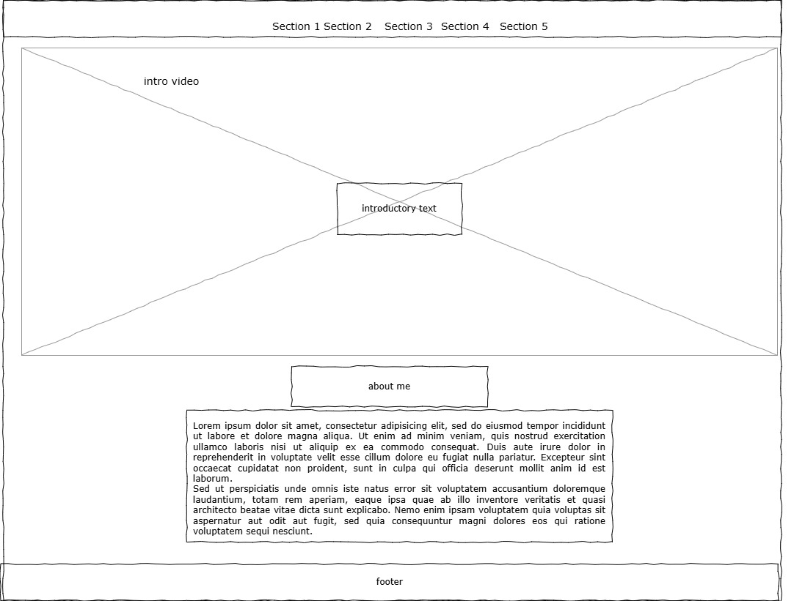
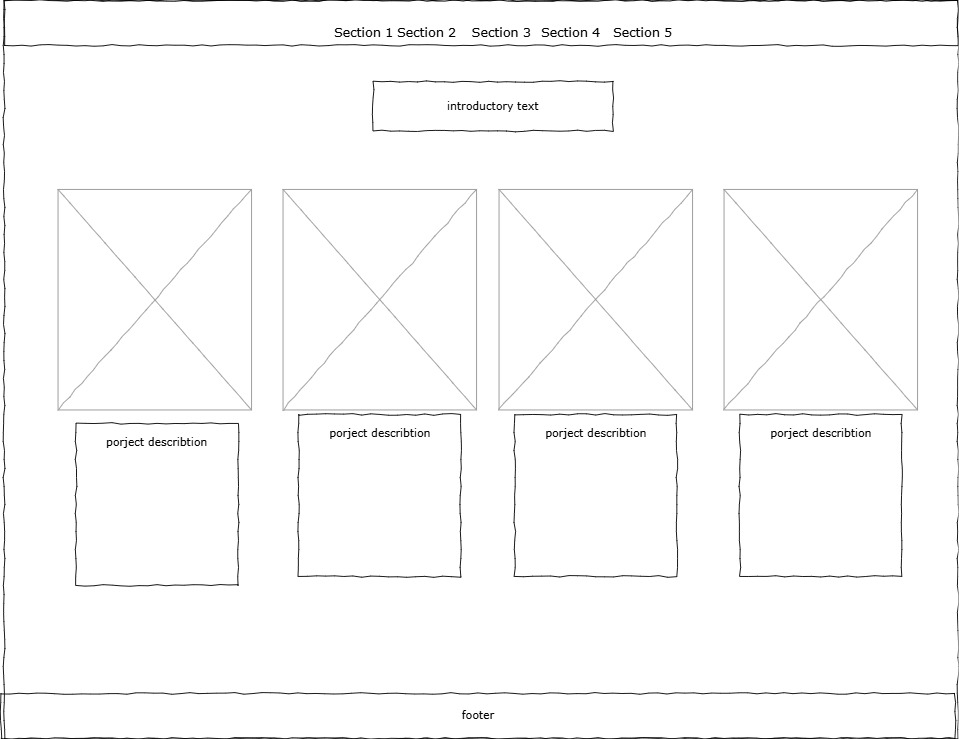
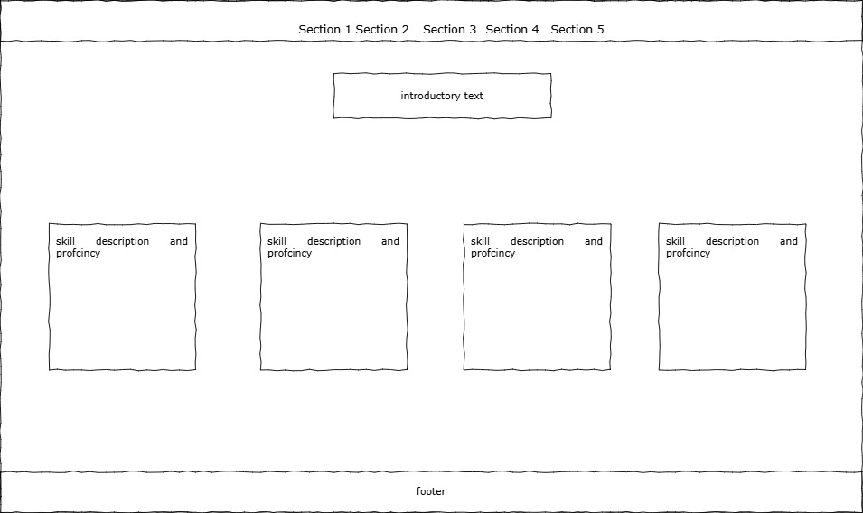
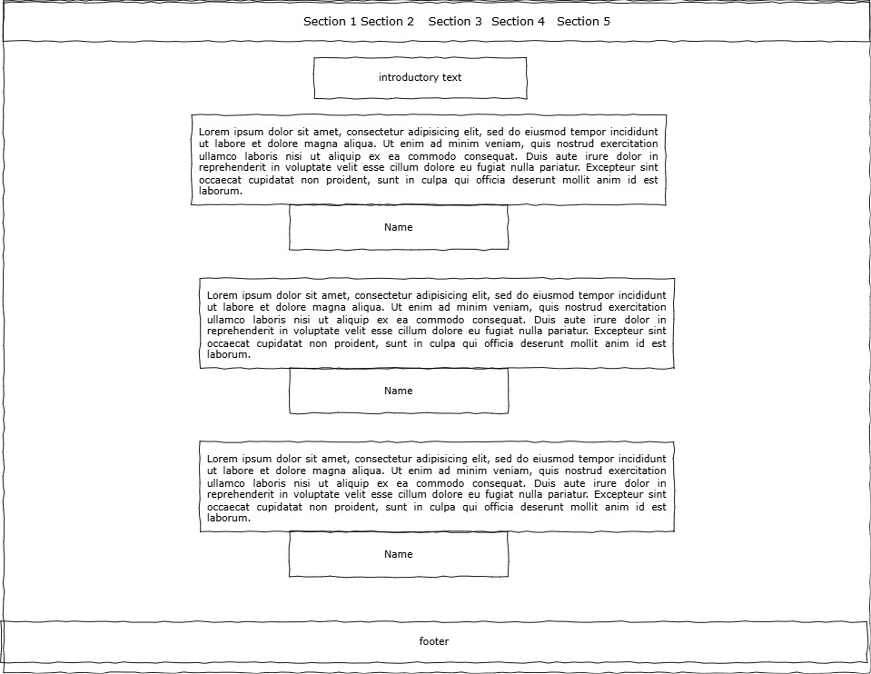
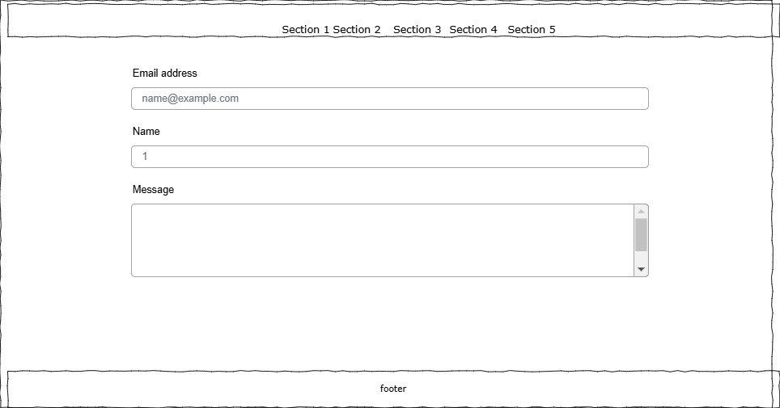

Introduction
This portfolio site showcases my journey and growth as an AI engineer, reflecting on the past years while also projecting future ambitions. It is designed to engage and inform potential employers and collaborators in the tech industry. The structure of the site is modular, featuring sections for projects, skills, testimonials, and contact information.
Inspiration
- Site 1: alexjpate.com - I admired its clean design and intuitive navigation, which I implemented by using a similar layout.
- Site 2: nick.computer - The use of light colors inspired me to add visual highlights to my own site to make key areas stand out.
- Site 3: joshwcomeau.com - Their interactive project gallery helped me understand how to effectively showcase my own work.
Accessibility
- Text Alternatives: Provided alt text for all images to ensure screen reader accessibility.
- Keyboard Navigation: Ensured all site functionality is accessible using a keyboard.
- Contrast Ratios: Maintained sufficient contrast ratios to assist users with visual impairments.
Usability
- Responsive Design: The site is fully responsive, ensuring usability across various devices and screen sizes.
- Consistent Navigation: Maintained a consistent navigation structure to ease user movement throughout the site.
- Intuitive User Navigation: Designed the website with an intuitive navigation system that effortlessly guides users through various sections, ensuring a smooth and efficient user experience. The layout is structured to prioritize ease of access to information, with interactive elements that respond dynamically to user interactions, fostering a seamless exploration of content.
Learning
- Advanced CSS Techniques: Learned how to use grid and flexbox to improve layout design.
- JavaScript Interactivity: Gained skills in JavaScript for adding interactive elements like modals and forms.
- Performance Optimization Techniques: Learned and applied critical performance optimization strategies to ensure the site loads quickly and runs smoothly across all devices. This included compressing images, minifying CSS and JavaScript files, and leveraging browser caching. These optimizations help in reducing the site's load time, which enhances user experience and contributes to better user retention.
Evaluation I
I believe the responsive design and the interactive project gallery were particularly successful because they significantly enhance user engagement and accessibility on multiple devices.
Evaluation II
Moving forward, I plan to enhance the functionality and design of interactive elements, such as buttons and features, to improve user engagement. Additionally, gathering more user feedback will be crucial in further refining the usability and overall user experience of the site.
Resources
the portfolio photos prompts GENERATE A PHOTO FOR THIS Weather Prediction SYSTEM,NOW THIS ONE Client Cancellation Prediction, Developed a comprehensive Dorms Registration System for Galala University using MySQL, Flask, HTML, and CSS. • Illustrated skills in database management, web development, and user interface design for practical, real-world applications, Emergency Navigation System (Python - Graph Theory) • Developed a critical Emergency Navigation System for distressed ships using Python, graph theory, and geographical data processing. • Showcased a deep understanding of advanced algorithms, geographical data, and their application in solving real-world challenges. now generate photo for this generate a photo
Appendices
Additional documents such as wireframes is included below. See images for detailed views:
- 
- 
- 
- 
- 